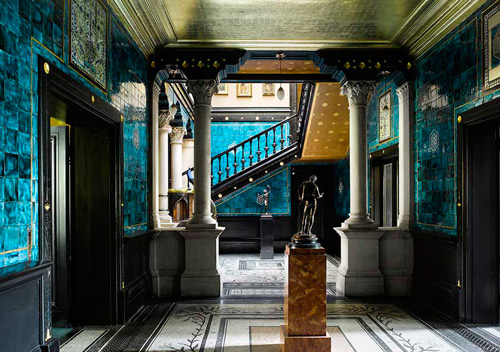
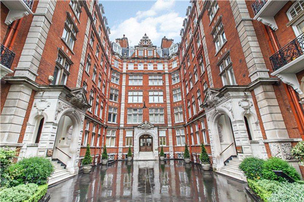
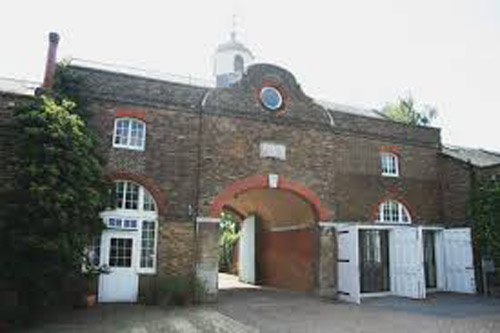

The Peacock House, Addison Road, London W14 used as 'Shaitana's house'. Built in 1905 by Halsey Ricardo for department store owner Sir Ernest Debenham. The house became known as 'Debenham House' after Sir Ernest's death. (Also used in 'Lord Edgware Dies').

Leighton House Museum in Stafford Terrace, London W8 used as the entrance hall of Shaitana's house.

Alexandra Court, Queen's Gate, London SW7 used as 'Borodene Mansions - Ariadne Oliver's apartment'. (Also seen in 'Third Girl').

Ham House Stables where Major Despard stables his horses.

Stables - interior view.

Piccadilly Arcade where Poirot buys stockings from Neal & Palmer to trick Anne Meredith.

The Albert Memorial where all four sleuths walk after the all-night bridge party (and murder).